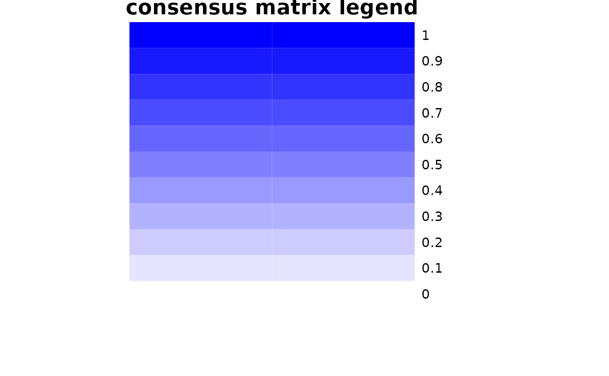
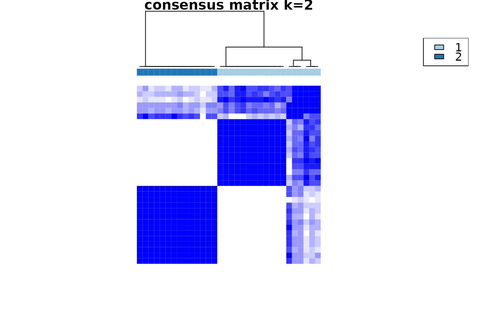
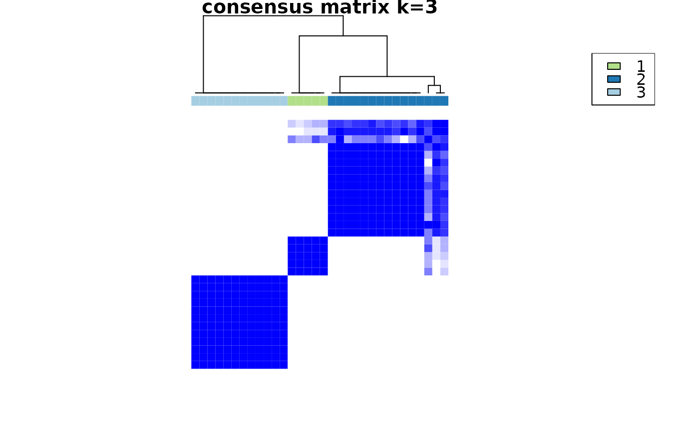
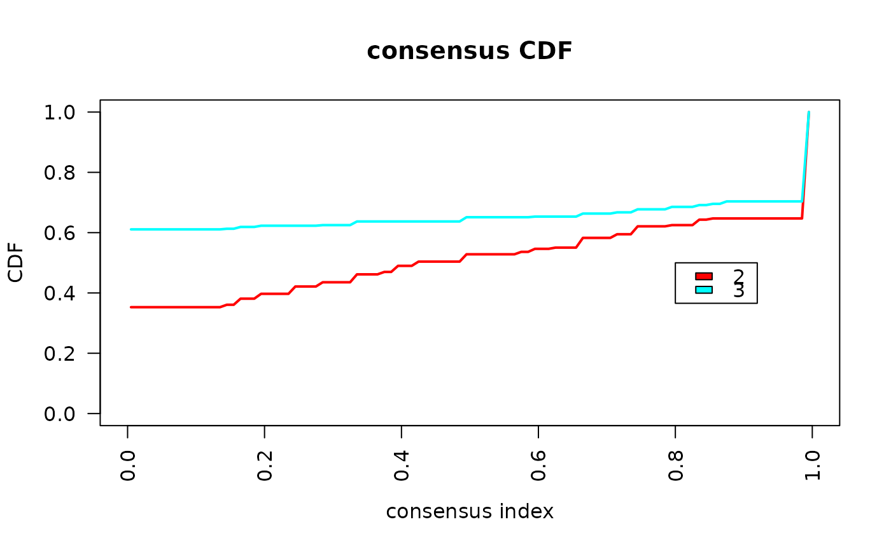

Cross-sectional clustering with categorical variables
Source:R/crosssectional_consensus_cluster.R
crosssectional_consensus_cluster.RdThis function uses the ConsensusClusterPlus function from the package
with the same name with defaults for clustering data with categorical
variables. As the distance function, the Gower distance is used.
Usage
crosssectional_consensus_cluster(
data,
reps = 1000,
finalLinkage = "ward.D2",
innerLinkage = "ward.D2",
...
)Arguments
- data
a matrix or data.frame containing variables that should be used for computing the distance. This argument is passed to
StatMatch::gower.dist- reps
number of repetitions, same as in
ConsensusClusterPlus- finalLinkage
linkage method for final clustering, same as in
ConsensusClusterPlussame as inConsensusClusterPlus- innerLinkage
linkage method for clustering steps, same as in
ConsensusClusterPlus- ...
other arguments passed to
ConsensusClusterPlus, attention: thedargument can not be set as it is directly computed bycrosssectional_consensus_cluster
Details
data can take all input data types that gower.dist
can handle, i.e. numeric, character/factor, ordered
and logical.
Examples
dc <- mtcars
# scale continuous variables
dc <- sapply(mtcars[, 1:7], scale)
# code factor variables
dc <- cbind(as.data.frame(dc),
vs = as.factor(mtcars$vs),
am = as.factor(mtcars$am),
gear = as.factor(mtcars$gear),
carb = as.factor(mtcars$carb))
cc <- crosssectional_consensus_cluster(
data = dc,
reps = 10,
seed = 1
)
#> end fraction
#> clustered

#> clustered


